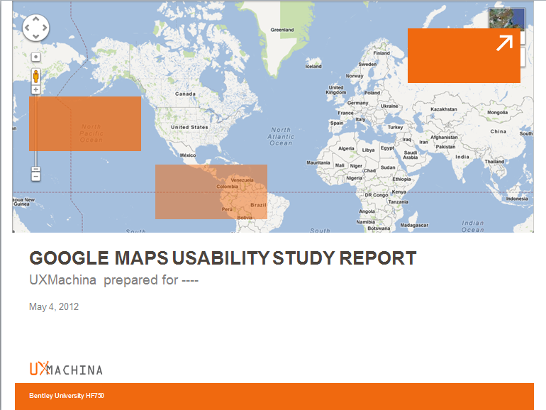
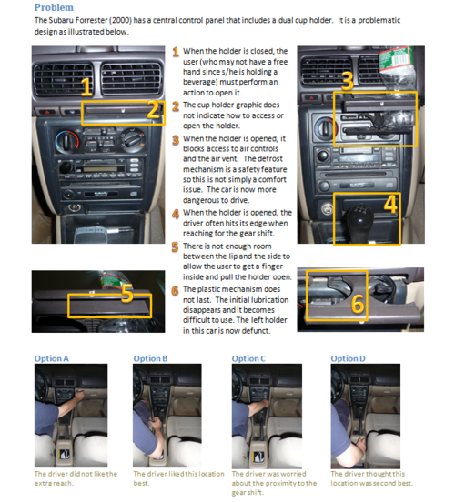
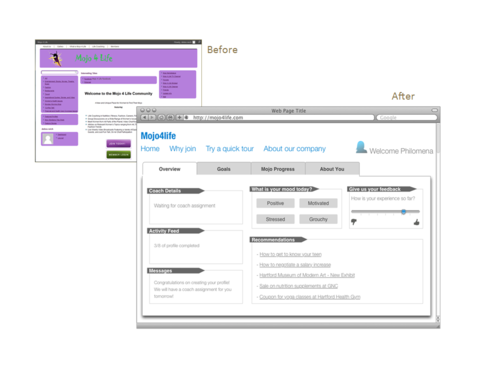

User Experience Professional, Boston
dmreich@gmail.com
Working on a team of four students, we presented results from an online survey and one-on-one user testing of Google Maps for a company that has its own location service. These images show salient slides from the client presentation.
This page outlines problems with the Subaru Forester cup holder.
The series of images labeled Options A through D document the reach of a user to check on potential places to relocate the holder.
In the case of the Mojo4Life site, the most straightforward method of depicting the site's shortcomings was by creating a prototype to show what it could achieve. The site was intended to help women achieve goals with the help of an online life coach.
